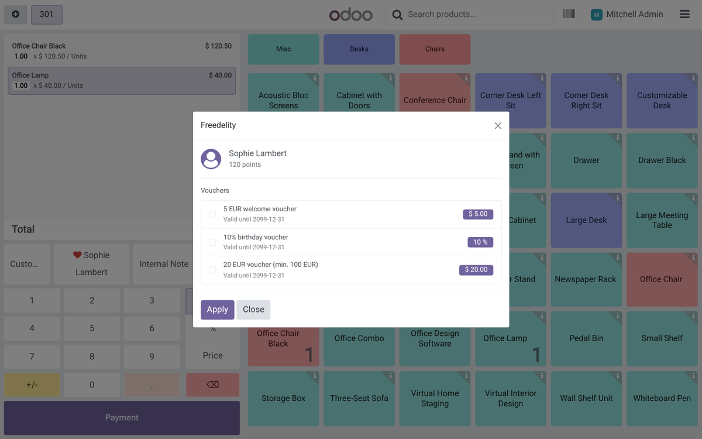
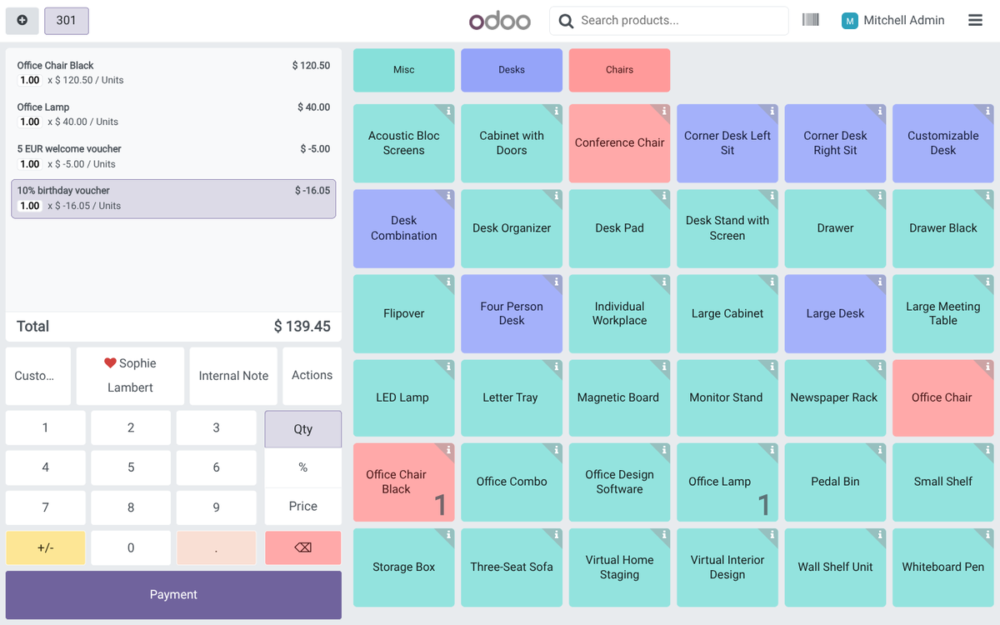
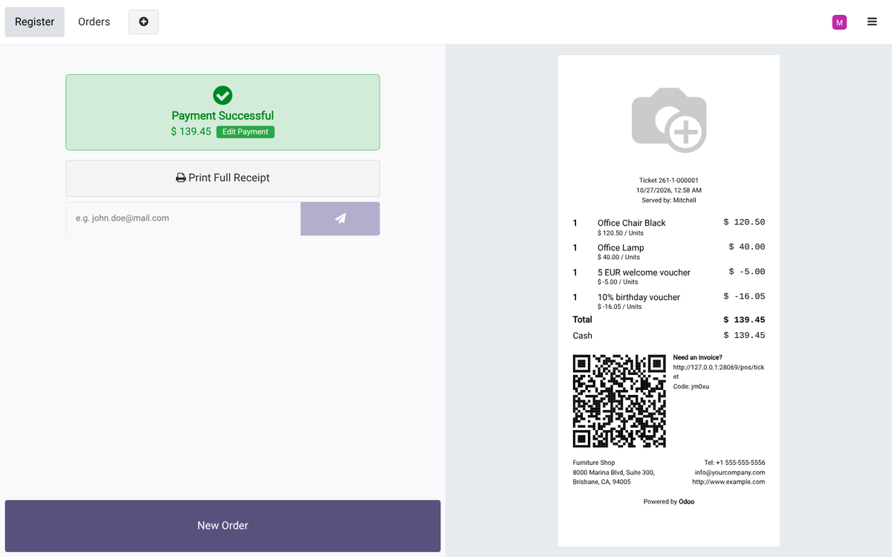
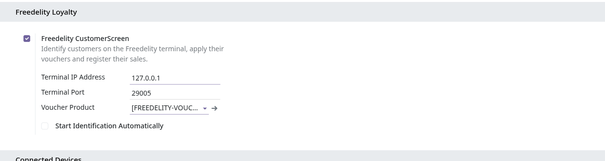
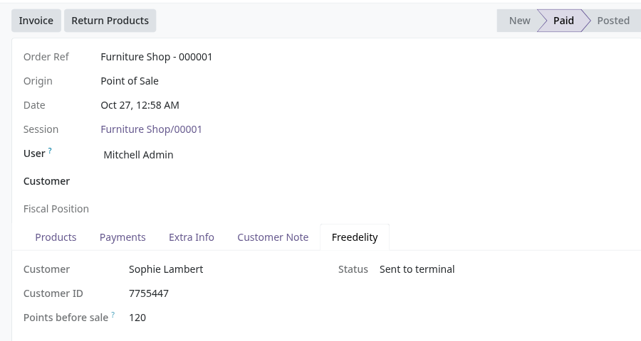

Connect your Odoo point of sale to the Freedelity CustomerScreen terminal. Your customers identify themselves at the counter, the cashier sees their points and vouchers, and every sale is credited to their loyalty account.
Odoo 18.0 · Community and Enterprise · Odoo.sh and on-premise

Loyalty card, Belgian eID or QR code: the customer identifies on the terminal while you ring up the order. Can't find their card? Search them by name, email, phone or postcode right from the POS.
Amount and percentage vouchers are listed with their validity and minimum purchase. Ticked vouchers become discount lines split per VAT rate, so your taxable base stays correct.
Each paid order is sent to the terminal with its products and categories. If the terminal is unreachable the sale is queued and retried automatically; the terminal itself syncs with Freedelity.


Enable Freedelity in the Point of Sale settings and enter the IP address of the terminal. Each order shows the Freedelity customer, their points and whether the sale reached the terminal; a filter lists the sales still waiting.


Not a Freedelity customer yet? Contact support@freedelity.be.
Nothing is sent until you enable Freedelity in the Point of Sale settings (it is off by default). Once enabled, the browser of the cash register sends each paid order to the terminal on your local network: order reference, totals, vouchers used, and the name, reference, category, quantity and price of each product. The terminal forwards it to your Freedelity loyalty account (Freedelity SA, Belgium), where it is credited to the identified customer. The Odoo server itself never contacts Freedelity. Questions about personal data: privacy@freedelity.be.
Freedelity SA · Rue Altiero Spinelli 7, 1401 Nivelles, Belgium · support@freedelity.be